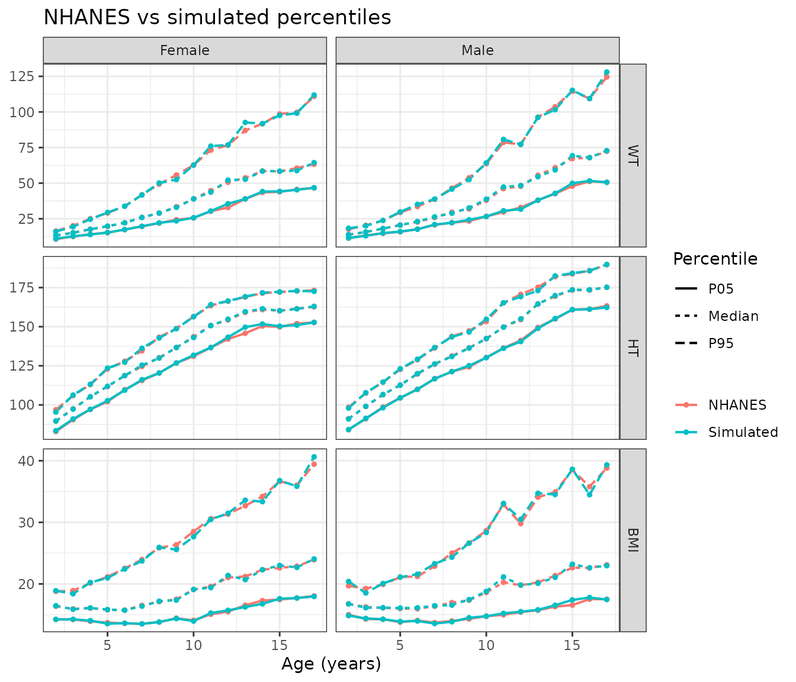

Pediatric simulations need realistic covariates. Body weight drives
allometric scaling of clearance and volume, and weight-based or
body-surface-area-based dosing needs weight and height that belong
together. sample_nhanes() generates virtual children aged 2
to 17 years with body weight and/or standing height drawn from the US
National Health and Nutrition Examination Survey (NHANES).
The reference data
The package includes nhanes_peds, with one row per child
from four NHANES releases (2013-2014 to 2021-2023):
head(nhanes_peds)
#> CYCLE SEQN AGE_MONTHS AGE SEX WT HT MEC_WT
#> 1 2013-14 73560 119 9 Male 32.2 137.30 55766.512
#> 2 2013-14 73570 109 9 Female 31.9 135.50 12071.467
#> 3 2013-14 73572 125 10 Female 41.7 145.40 12764.396
#> 4 2013-14 73573 128 10 Male 50.1 158.38 6460.788
#> 5 2013-14 73576 194 16 Male 67.3 170.40 12665.770
#> 6 2013-14 73579 147 12 Female 40.2 161.00 70708.034
table(nhanes_peds$CYCLE)
#>
#> 2013-14 2015-16 2017-18 2021-23
#> 3241 3138 2593 2258Each child has a mobile examination center (MEC) exam weight
(MEC_WT), which NHANES provides so that its sample
represents the US population. A few children have only one of weight or
height measured. They are kept, and are used whenever the missing
measure isn’t needed.
Simulating a population
sample_nhanes() simulates n children (500
by default) per age (in whole years) and sex:
sim <- sample_nhanes(seed = 20261008)
sim
#> # A tibble: 16,000 × 8
#> ID AGE SEXN SEX WT HT SOURCE_CYCLE SOURCE_SEQN
#> <int> <int> <int> <chr> <dbl> <dbl> <chr> <dbl>
#> 1 1 2 1 Male 13.7 90.7 2013-14 81515
#> 2 2 2 1 Male 13.4 91.6 2015-16 90822
#> 3 3 2 1 Male 13.5 87 2021-23 136484
#> 4 4 2 1 Male 15.3 93.5 2015-16 84344
#> 5 5 2 1 Male 11.7 83.1 2013-14 73710
#> 6 6 2 1 Male 12.6 87.1 2015-16 85690
#> 7 7 2 1 Male 14.3 94.6 2015-16 84670
#> 8 8 2 1 Male 14.9 98 2013-14 75617
#> 9 9 2 1 Male 12.4 93 2021-23 130853
#> 10 10 2 1 Male 13 92.7 2013-14 74811
#> # ℹ 15,990 more rowsFor each age and sex, it resamples real children, weighted by their
MEC exam weights with each NHANES release given an equal share.
Resampling is by child: each simulated child takes the weight and height
of one real child, so every value is one that was actually measured, and
weight and height stay paired. SOURCE_CYCLE and
SOURCE_SEQN identify that child.
Details of the reference in each age and sex group are stored with the result:
head(attr(sim, "kernels"))
#> # A tibble: 6 × 7
#> AGE SEX N_NHANES N_EFF H_WT H_HT RHO
#> <int> <chr> <int> <dbl> <dbl> <dbl> <dbl>
#> 1 2 Male 366 263. 0 0 0.735
#> 2 2 Female 381 238. 0 0 0.752
#> 3 3 Male 341 220. 0 0 0.700
#> 4 3 Female 295 196. 0 0 0.810
#> 5 4 Male 364 266. 0 0 0.742
#> 6 4 Female 357 245. 0 0 0.765N_NHANES is the number of reference children,
N_EFF their effective sample size after weighting, and
RHO the weighted correlation between log weight and log
height. H_WT and H_HT are 0 here; they are the
noise used by the smoothed method described below.
Checking the simulation
compare_nhanes() summarises weight, height and body mass
index for the simulated population and for the weighted NHANES reference
it came from:
cmp <- compare_nhanes(sim)
cmp[cmp$AGE == 10, c("SEX", "VARIABLE", "Median_REF", "Median_SIM",
"P05_RATIO", "P95_RATIO", "RHO_REF", "RHO_SIM")]
#> # A tibble: 6 × 8
#> SEX VARIABLE Median_REF Median_SIM P05_RATIO P95_RATIO RHO_REF RHO_SIM
#> <chr> <chr> <dbl> <dbl> <dbl> <dbl> <dbl> <dbl>
#> 1 Male WT 38 38.7 1 1.01 0.676 0.687
#> 2 Male HT 142. 142. 0.999 1.01 0.676 0.687
#> 3 Male BMI 18.6 18.8 1.00 0.990 0.676 0.687
#> 4 Female WT 38.9 38.9 1.01 0.999 0.730 0.737
#> 5 Female HT 144. 143. 1.01 1 0.730 0.737
#> 6 Female BMI 19.1 19.1 0.991 0.970 0.730 0.737plot_nhanes() shows the 5th, 50th and 95th percentiles
against age:
plot_nhanes(cmp)
Body mass index is included because it depends on weight and height
together. If it matches the reference, the relationship between the two
has been kept, not just each measure on its own. The 5th and 95th
percentiles of weight vary more from run to run than the medians,
because weight has a long upper tail; increase n if the
tails matter for your simulation.
Options
Simulate a subset of ages, one sex, or a single measure. With
vars = "WT", children whose height is missing are also
used:
wt <- sample_nhanes(n = 100, ages = 6:12, sex = "Female", vars = "WT",
seed = 1)
head(wt)
#> # A tibble: 6 × 7
#> ID AGE SEXN SEX WT SOURCE_CYCLE SOURCE_SEQN
#> <int> <int> <int> <chr> <dbl> <chr> <dbl>
#> 1 1 6 2 Female 24.4 2021-23 138289
#> 2 2 6 2 Female 24.1 2015-16 85673
#> 3 3 6 2 Female 23.4 2021-23 132599
#> 4 4 6 2 Female 29.6 2015-16 91186
#> 5 5 6 2 Female 20.9 2021-23 133204
#> 6 6 6 2 Female 21.3 2015-16 88053cycles restricts the reference to particular NHANES
releases, for example the most recent one only:
recent <- sample_nhanes(n = 100, ages = 2:5, cycles = "2021-23", seed = 1)
table(recent$SOURCE_CYCLE)
#>
#> 2021-23
#> 800Smoothed values
Resampled values repeat those of the reference children. If a
simulation needs continuous values instead,
method = "smooth" adds a small amount of random noise to
each resampled child’s log weight and log height. The noise for weight
and height is correlated like the reference data, so a tall child stays
heavier than a short one of the same age:
smoothed <- sample_nhanes(n = 500, ages = c(4, 10, 16), method = "smooth",
seed = 20261008)
head(smoothed)
#> # A tibble: 6 × 8
#> ID AGE SEXN SEX WT HT SOURCE_CYCLE SOURCE_SEQN
#> <int> <int> <int> <chr> <dbl> <dbl> <chr> <dbl>
#> 1 1 4 1 Male 23.4 108. 2013-14 81253
#> 2 2 4 1 Male 18.0 104. 2015-16 90807
#> 3 3 4 1 Male 22.3 109. 2021-23 134520
#> 4 4 4 1 Male 18.3 103. 2015-16 83780
#> 5 5 4 1 Male 15.1 98.6 2013-14 73646
#> 6 6 4 1 Male 12.9 95.6 2021-23 137398
attr(smoothed, "kernels")
#> # A tibble: 6 × 7
#> AGE SEX N_NHANES N_EFF H_WT H_HT RHO
#> <int> <chr> <int> <dbl> <dbl> <dbl> <dbl>
#> 1 4 Male 364 266. 0.0501 0.0161 0.742
#> 2 4 Female 357 245. 0.0572 0.0178 0.765
#> 3 10 Male 364 248. 0.0879 0.0184 0.676
#> 4 10 Female 359 238. 0.0998 0.0178 0.730
#> 5 16 Male 317 209. 0.0908 0.0155 0.407
#> 6 16 Female 355 216. 0.0824 0.0143 0.347H_WT and H_HT are the noise standard
deviations on the log scale (0.05 is roughly 5%).
bandwidth_factor scales them: values above 1 smooth more.
Check smoothed populations with compare_nhanes() in the
same way.
Using the population in a PK simulation
The result is an ordinary data frame, so derived covariates are one step away. For example, body surface area (Mosteller) and an allometrically scaled clearance for a typical value of 10 L/h at 70 kg:
sim$BSA <- sqrt(sim$WT * sim$HT / 3600)
sim$CL <- 10 * (sim$WT / 70)^0.75
head(sim[c("ID", "AGE", "SEX", "WT", "HT", "BSA", "CL")])
#> # A tibble: 6 × 7
#> ID AGE SEX WT HT BSA CL
#> <int> <int> <chr> <dbl> <dbl> <dbl> <dbl>
#> 1 1 2 Male 13.7 90.7 0.588 2.94
#> 2 2 2 Male 13.4 91.6 0.584 2.89
#> 3 3 2 Male 13.5 87 0.571 2.91
#> 4 4 2 Male 15.3 93.5 0.630 3.20
#> 5 5 2 Male 11.7 83.1 0.520 2.61
#> 6 6 2 Male 12.6 87.1 0.552 2.76